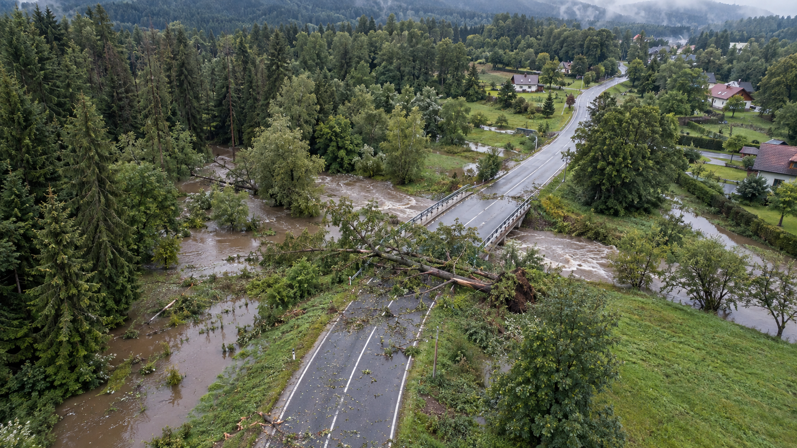

Wybierz swoją rolę
Jeden incydent. Trzy punkty widzenia.
Obraz → weryfikacja → reakcjaMapa i dane są poglądowe
CENTRUM OPERACJI
Obraz sytuacji
Kamera drona 01
Droga 14 · obraz poglądowy
DRON 01 · KAMERA A00:00:00
RGB1.0× ALT 82 m
OBRAZ SYMULOWANY
Obraz z dronów
Wybierz kamerę, aby sprawdzić odczytyCzujniki drona 01
Odczyty symulowaneTemperatura21.4°C
Wilgotność68%
Dym0.02ppm
Hałas54dB
Bateria78%